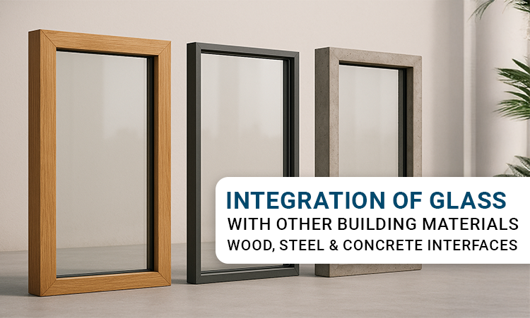

The Art and Engineering Behind Material Connections
Modern architecture relies on glass not just for aesthetics but as a functional material that interacts with wood, steel, and concrete. The connection between these materials defines the durability, performance, and appearance of the entire structure. Whether used in façades, interior partitions, or load-bearing systems, the way glass interfaces with its supporting materials decides how the building behaves under stress, temperature change, and time.
Integrating glass with other materials demands precision and understanding of both engineering and craft. Each interface, whether wood, steel, or concrete, comes with its own challenges of expansion, bonding, and load transfer.
Glass and Wood: Traditional Warmth Meets Modern Precision
Wood has long been valued for its natural appearance and thermal performance. When combined with glass, it creates spaces that feel open yet grounded. However, the physical properties of wood and glass differ significantly.
Wood expands and contracts with changes in humidity, while glass remains dimensionally stable. This difference requires careful joint detailing. Designers use flexible sealants and gaskets to allow slight movement without stress on the glass edges.
Modern laminated or laminated glass panels are often preferred in timber frames to improve safety. In curtain walls and skylights, treated hardwoods and engineered timber sections provide both strength and insulation.
In interior spaces, the glass and wood combination is used in doors, railings, and partitions to balance transparency with acoustic and visual warmth. The result is a clean interface that is both functional and natural in appearance.
Glass and Steel: Precision and Strength in Structure
Steel is one of the most common materials used with glass because of its high strength, stability, and ability to carry large spans with minimal profiles. The interface between glass and steel must accommodate temperature variation and differential expansion.
In structural glazing systems, glass is bonded or fixed to steel mullions using silicone sealants or bolted fittings. Each connection must distribute load evenly to prevent stress concentrations at the corners. For façades, double-glazed or insulated glass units are combined with steel frames to control heat transfer while maintaining a slender appearance.
Stainless steel is often chosen for exposed joints or fittings due to its corrosion resistance. The combination is especially effective in high-rise façades, canopies, and atriums where strength and transparency must coexist.
In performance-driven architecture, precision fabrication of both steel and glass elements is key. Even a small tolerance mismatch can lead to edge pressure or visible misalignment. Properly designed spacers, setting blocks, and sealants help maintain consistent clearances between materials.
Glass and Concrete: Stability, Mass, and Compatibility
Concrete provides mass, rigidity, and fire resistance, while glass contributes openness and daylight. However, integrating the two requires attention to movement and thermal bridging.
Concrete expands with temperature and shrinks over time as it cures. If glass is rigidly fixed to concrete without a joint system, cracks can occur at the edges. That is why modern façade systems use brackets, anchors, and gasket joints that allow small movements.
When installing glass panels into concrete openings, the surfaces are isolated using thermal breaks or sealant joints. This prevents direct contact that could lead to stress during structural shifts. Toughened or toughened glass is preferred for such applications because it resists impact and thermal shock better than standard float glass.
In commercial projects, pre-cast concrete façades combined with large glass panels achieve a balance of permanence and lightness. In residential buildings, concrete balconies and parapets often integrate glass balustrades to provide safety without blocking views.
Thermal and Structural Considerations at Interfaces
Each of these materials, wood, steel, and concrete, has its own coefficient of expansion. That means under temperature changes, each moves differently. Designers must anticipate this differential movement when detailing joints and selecting adhesives.
- For wood-glass joints, silicone or polyurethane sealants with high flexibility are preferred.
- For steel-glass joints, thermal breaks and spacers prevent condensation and frame distortion.
- For concrete-glass joints, compressible gaskets and expansion joints handle building movement.
Apart from thermal issues, moisture and corrosion also affect performance. Steel interfaces require anti-corrosive coatings, while concrete edges must be sealed against water ingress. In humid environments, wooden frames need proper treatment and controlled indoor conditions.
Design Detailing and Safety Factors
Designers must allow for deflection, tolerances, and maintenance access at every interface. For example, point-fixed glass systems that use bolts or spider fittings require washers and isolation pads to avoid direct contact between metal and glass.
In fire-rated areas, laminated or fire-resistant glass replaces standard glazing to maintain compartmentation without compromising on transparency. In wet zones like swimming pools or greenhouses, special sealants with UV and water resistance extend the lifespan of the joint.
Architectural details should also consider drainage paths, especially in curtain wall systems, to prevent water accumulation at the base of glass units.
Aesthetics and Functional Balance
The integration of glass with wood, steel, or concrete is not only a technical task but a design choice that shapes the visual character of a space. Glass paired with wood gives a natural look suited for interiors. Glass with steel communicates precision and modernity, while glass with concrete expresses strength and permanence.
When specified correctly, these interfaces create smooth transitions between transparency and solidity, allowing buildings to perform efficiently while maintaining their intended design language.
Conclusion
Every building material has its own behavior, and the success of glass integration lies in understanding those differences. Whether bonded to timber, anchored to steel, or embedded in concrete, the connection between materials must allow flexibility and movement without loss of performance.
A well-detailed interface does more than hold the glass in place; it contributes to the safety, comfort, and longevity of the entire structure. For architects and builders, mastering this relationship means creating spaces that are strong, sustainable, and visually refined.